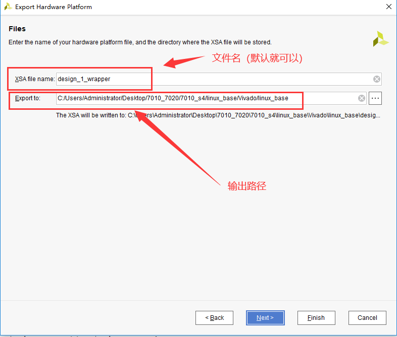
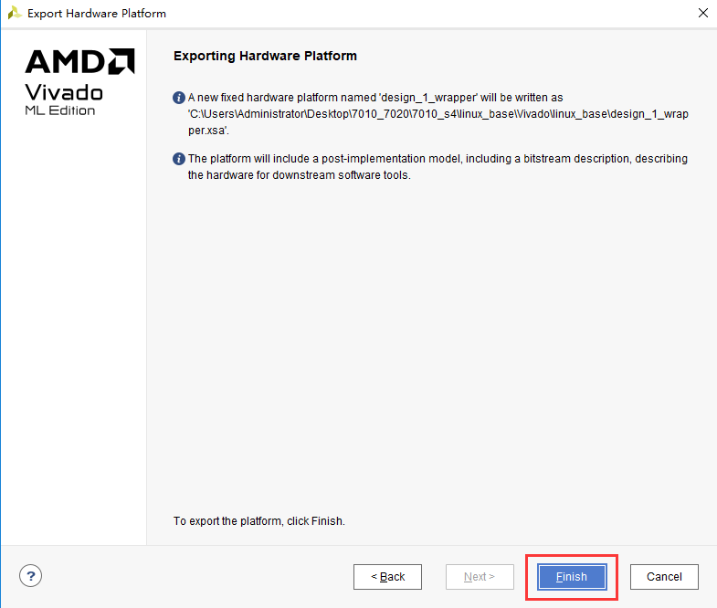
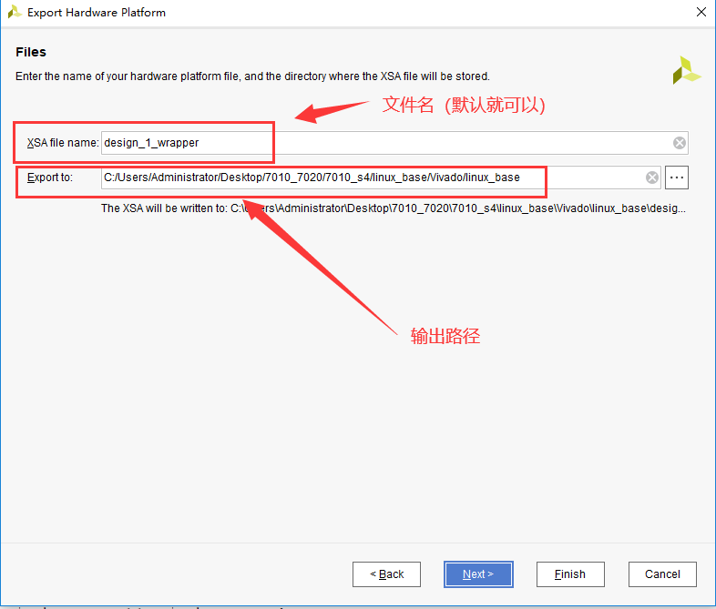
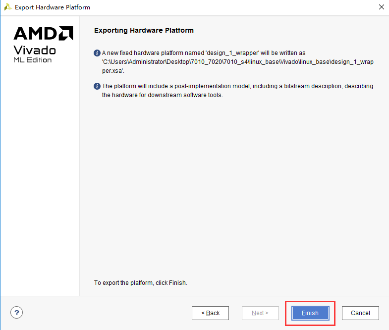
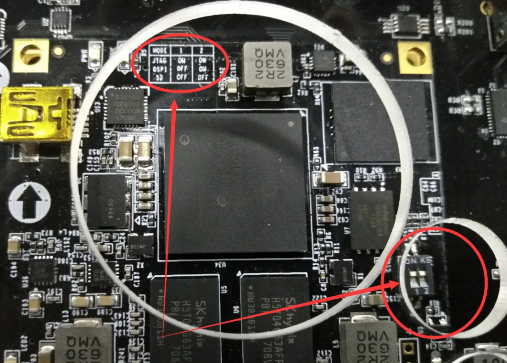

体验ARM，裸机输出“Hello World”#
实验VIvado工程为“ps_hello”。
前面的实验都是在PL端进行的，可以看到和普通FPGA开发流程没有任何区别，ZYNQ的主要优势就是FPGA和ARM的合理结合，这对开发人员提出了更高的要求。从本章开始，我们开始使用ARM，也就是我们说的PS，本章我们使用一个简单的串口打印来体验一下Vivado Vitis和PS端的特性。
硬件介绍#
我们从原理图中可以看到ZYNQ芯片分为PL和PS，PS端的IO分配相对是固定的，不能任意分配，而且不需要在Vivado软件里分配管脚，虽然本实验仅仅使用了PS，但是还要建立一个Vivado工程，用来配置PS管脚。
Vivado工程建立#
创建一个名为“ps_hello”的工程
点击“Create Block Design”，创建一个Block设计

“Design name”这里不做修改，保持默认“design_1”，这里可以根据需要修改，不过名字要尽量简短，否则在Windows下编译会有问题。
点击“Add IP”快捷图标

搜索“zynq”，在搜索结果列表中双击“ZYNQ7 Processing System”
双击Block图中的“processing_system7_0”，配置相关参数

在“PS-PL Configuration”选项中展开所以项目

取消“M AXI GP0 interface”接口，这个接口可以扩展PL端的AXI接口外设，所以PL如果要和PS进行数据交互，都要按照AXI总线协议进行，xilinx为我们提供了大量的AXI接口的IP 核。

从原理图中我们可以找到串口连接在PS的MIO12-MIO13上，所以在“Peripheral I/O Pins”选项中使能UART1（MIO12-13），Bank 0 电压选择“LVCMOS 3.3V”，Bank 1电压选择“LVCOMS 1.8 V”，本实验仅仅使用了一个串口功能，这里就不再使用其他设备。

在“Clock Configuration”选项卡中我们可以配置PS时钟输入频率，这里默认是33.333333，和板子上一致，不用修改，CPU频率默认666.666666Mhz，这里也不修改。同时PS还可以给PL端提供4路时钟，频率可以配置，这里不需要，所以保持默认即可。

在“DDR Configuration”选项卡中可以配置PS端ddr的参数，“Memory Part”选择“MT41J256M16 RE-125”,“Effective DRAM Bus Width”，选择“32 Bit”，到此配置完成，点击“OK”
点击“Run Block Automation”，vivado软件会自动完成一些导出端口的工作
点击“OK”
点击“OK”以后我们可以看到PS端导出一些管脚，包括DDR还有FIXED_IO，按键“Ctrl + s”保存设计

选择Block设计，右键“Create HDL Wrapper…”,创建一个Verilog或VHDL文件

保持默认选项，点击“OK”

展开设计可以看到PS被当成一个普通IP 来使用。
选择block设计，右键“Generate Output Products”

点击“Generate”
在菜单栏“File -> Export -> Export Hardware…”导出硬件信息，这里就包含了PS了的配置信息。

在弹出的对话框中点击“next”，因为实验仅仅是使用了PS的串口，不需要PL参与，这里就没有使能“Include bitstream”，继续步骤直到finish。
 



此时刚刚的路径下就会输出一个xsa文件，这个文件就是这个文件就包含了Vivado硬件设计的信息，供软件开发人员使用。
Vitis调试#
创建Application工程#
Vitis是独立的软件，我们可以通过ToolsLaunch Vitis打开Vitis软件

也可以双击Vitis软件打开

选择之前新建的文件夹，点击”Launch”

启动Vitis之后界面如下，点击“Create Application Project”，这个选项会生成APP工程以及Platfrom工程，Platform工程类似于以前版本的hardware platform，包含了硬件支持的相关文件以及BSP。

点击Next

点击“Create a new platform hardware(XSA)，软件已经提供了一些板卡的硬件平台，但对于我们自己的硬件平台，可以选择”+”

选择之前生成的xsa，点击打开

最下面的Generate boot components选项，如果勾选上，软件会自动生成fsbl工程，我们一般选择默认勾选上。点击Next

项目名称填入“hello”，也可以根据自己的需要填写,CPU默认选择ps7_cortexa9_0，OS选择standalone，点击Next

模板选择Hello World，点击Finish

完成之后可以看到生成了两个工程，一个是硬件平台工程，即之前所说的Platfrom工程，一个是APP工程

展开Platform工程后可以看到里面包含有BSP工程，以及zynq_fsbl工程（此工程即选择Generate boot components之后的结果）,双击platform.spr即可看到Platform对应生成的BSP工程，可以在这里对BSP进行配置。软件开发人员比较清楚，BSP也就是Board Support Package板级支持包的意思，里面包含了开发所需要的驱动文件，用于应用程序开发。可以看到Platform下有多个BSP，这是跟以往的Vitis软件不一样的，其中zynq_fsbl即是fsbl的BSP，standalone on ps7_cortexa9_0即是APP工程的BSP。也可以在Platform里添加BSP，在以后的例程中再讲。

点开BSP，即可看到工程带有的外设驱动，其中Documentation是xilinx提供的驱动的说明文档，Import Examples是xilinx提供的example工程，加快学习。

选中APP工程，右键Build Project，或者点击菜单栏的“锤子”按键，进行工程编译
可以在Console看到编译过程

编译结束，生成elf文件

连接JTAG线到开发板、UART的USB线到PC
使用PuTTY软件做为串口终端调试工具，PuTTY是一个免安装的小软件

选择Serial，Serial line填写COM3，Speed填写115200，COM3串口号根据设备管理器里显示的填写，点击“Open”

在上电之前最好将开发板的启动模式设置到JTAG模式
给开发板上电，准备运行程序，开发板出厂时带有程序，这里可以把运行模式选择JTAG模式，然后重新上电。选择“hello”，右键，可以看到很多选项，本实验要用到这里的“Run as”，就是把程序运行起来，“Run as”里又有很对选项，选择第一个“Launch on Hardware(Single Application Debug)”，使用系统调试，直接运行程序。

这个时候观察PuTTY软件，即可以看到输出”Hello World”

为了保证系统的可靠调试，最好是右键“Run As -> Run Configuration…”
我们可以看一下里面的配置，其中Reset entire system是默认选中的，这是跟以前的Vitis软件不同的。如果系统中还有PL设计，还必须选择“Program FPGA”。

除了“Run As”，还可以“Debug As”，这样可以设置断点，单步运行

进入Debug模式

和其他C语言开发IDE一样，可以逐步运行、设置断点等
右上角可以切换IDE模式

本章小结#
本章从FPGA工程师和软件工程师两者角度出发，介绍了ZYNQ开发的经典流程，FPGA工程师的主要工作是搭建好硬件平台，提供硬件描述文件xsa给软件工程师，软件工程师在此基础上开发应用程序。本章是一个简单的例子介绍了FPGA和软件工程师协同工作，后续还会牵涉到PS与PL之间的联合调试，较为复杂，也是ZYNQ开发的核心部分。
后续的工程都会以本章节的配置为准，后面不再介绍ZYNQ的基本配置。
千里之行，始于足下，相信经过本章的学习，大家对ZYNQ开发有了基本概念，高楼稳不稳，要看地基打的牢不牢，虽然本章较为简单，但也有很多知识点待诸位慢慢消化。加油！！！